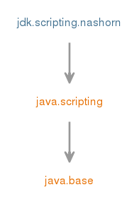

Module jdk.scripting.nashorn
提供Nashorn脚本引擎的实现和用ECMAScript 5.1编写的程序的运行时环境。
Nashorn公开了一个名为
Nashorn是用ECMAScript 5.1编写的程序的运行时环境。
用法
推荐使用Nashorn的方法是通过javax.script包中的JSR-223 "Scripting for the Java Platform" API。
通常，您将获得一个ScriptEngine的实例，用于Nashorn：
import javax.script.*;
...
ScriptEngine nashornEngine = new ScriptEngineManager().getEngineByName("nashorn");
然后像其他JSR-223脚本引擎一样使用它。
有关详细信息，请参阅jdk.nashorn.api.scripting包。
兼容性
Nashorn 100％符合ECMA-262 Standard, Edition 5.1 。 它需要一个实现JSR-292 "Supporting Dynamically Typed Languages on the Java Platform"规范的Java虚拟机（通常被称为“invokedynamic”）以及已经提到的JSR-223。与Java平台的互操作性
除了作为100％的ECMAScript 5.1运行时，Nashorn还提供了ECMAScript程序与Java平台的互操作性。 通常，脚本中可以看到放入脚本引擎上下文的任何Java对象。 在标准方面，这样的Java对象不被认为是“本地对象”，而是“4.3”中定义的“主机对象”。 与本地对象相比，这种区别允许处理它们时的某些语义上的差异。 对于大多数目的，Java对象的行为就像本地对象一样：您可以调用其方法，获取和设置其属性。 在大多数情况下，您不能向其添加任意属性，也不能删除现有属性。Java集合处理
本地Java数组和List支持通过属性访问器对其元素进行索引访问，而Map通过点和方括号属性访问器支持属性和元素访问，区别在于点操作符优先于对象属性（其字段和属性定义为getXxx和setXxx方法），而方括号操作符优先于映射元素。
Native Java数组暴露length属性。
ECMAScript原始类型
ECMAScript的原始类型为数字，字符串，和布尔被表示与Number ， CharSequence ，和Boolean对象。
虽然最常用的号码类型为Double和最经常使用的字符串类型为String ，不依赖于它作为各种内部优化造成的其他子类Number及内部实现CharSequence使用。
输入转换
当调用Java对象上的方法时，使用所有允许的ECMAScript转换将参数转换为Java方法的形式参数类型。 这可能是令人惊讶的，因为一般来说，从字符串到数字的转换将根据标准的第9.3节“ToNumber”等进行成功; string to boolean，number to boolean，Object to number，Object to string all work。 请注意，如果Java方法声明的参数类型为java.lang.Object ，那么Nashorn对象就不会转换任何转换;
具体来说，如果传递的JavaScript值是原始字符串类型，那么您只能依靠它作为一个java.lang.CharSequence ，如果该值是一个数字，那么您只能依靠它作为一个java.lang.Number 。
如果Java方法声明的参数类型更具体（例如java.lang.String或java.lang.Double ），那么Nashorn当然会确保所需的类型被传递。
SAM类型
作为调用Java方法时的特殊扩展，ECMAScript函数对象可以被传递代替其Java类型是所谓的“单抽象方法”或“SAM”类型的参数。 虽然这个名字通常包含单一方法的接口，但是Nashorn的功能更为多样，如果所有的抽象方法都是同名的重载，那么它就会被识别为一个SAM类型，它是一个接口，也可以是一个抽象类与无arg构造函数。 类型本身必须是public的，而构造函数和方法可以是public或protected。 如果同一个名称有多个抽象重载，则单个函数将作为所有这些重用的共享实现， 并且还将覆盖相同名称的任何非抽象方法 。 这样做与ECMAScript不具有重载方法的概念相一致。 Java对象
Nashorn公开了一个名为Java的非标准全局对象，它是将Java平台特定功能的主要API入口点。
您可以使用它创建Java类的实例，从Java数组转换为本地数组并返回等等。
其他非标内置对象
除了Java ，犀牛也暴露了一些其他非标准内置对象： JSAdapter ， JavaImporter ， Packages
- Module Graph:
- 
- 从以下版本开始：
- 9
{kind=link}
-
-
Packages
Exports 软件包 描述 jdk.nashorn.api.scripting 这个包提供了javax.script集成，这是使用Nashorn的首选方式。jdk.nashorn.api.tree Nashorn解析器API提供了将ECMAScript源代码表示为抽象语法树（AST）和解析器来解析ECMAScript源脚本的接口。Indirect Exports From Packages java.scripting javax.script
-
Modules
Requires Modifier Module 描述 transitive java.scripting 定义脚本API。
-
Services
Provides Type 描述 ScriptEngineFactory ScriptEngineFactory用于描述和实例化ScriptEngines。
-